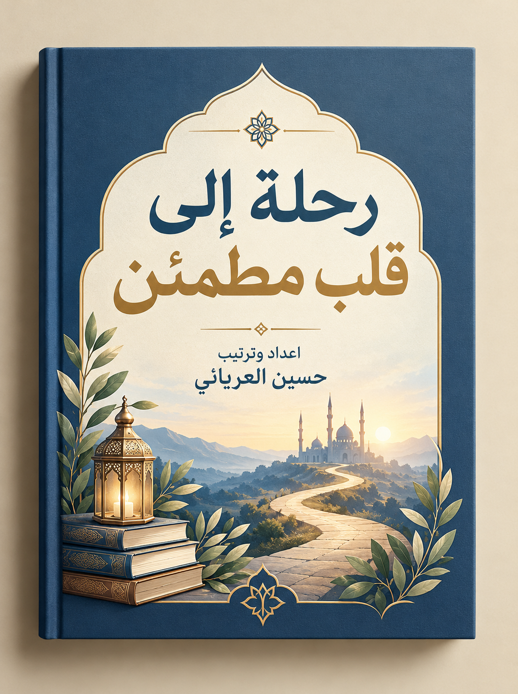

🙏
من الصلاة إلى السكينة
قول المؤلف كم من شخص دخل صلاته وهو يحمل همًّا كبيرًا، ثم خرج منها أكثر هدوءًا، لا لأن المشكلة انتهت، بل لأنه شعر أن الله معه.
العبرة: الصلاة لا تحل كل مشكلة، لكنها تبدّل الخوف أمنًا والقلق سكينة.

دليل بسيط يذكّر القلب المتعب بالطريق إلى الطمأنينة، ويُقرأ بهدوء لا بعجلة.
قول المؤلف يعيش كثيرون في ضجيج وضغوط، ويشعرون بالتعب النفسي والقلق رغم توفر أسباب الراحة المادية، والقلب لا يجد سكينته الحقيقية إلا بالقرب من الله. لذلك وُضع هذا الكتاب دليلًا عمليًا يذكّر بالطريق إلى الطمأنينة، ويستمد أفكاره من القرآن والسنة.
قول المؤلف كُتب لكل من يستيقظ مثقلًا بالتفكير، ولمن تحيّر أمام قرارات الحياة، ولمن مر بتجربة قاسية، ولمن فقد عزيزًا أو تأخر عليه ما يتمناه، ولمن يعيش حياة مستقرة ويريد قربًا أكبر من الله. وهو للشباب الباحثين عن معنى، وللآباء والأمهات، ولكل من يريد أن يبدأ صفحة جديدة مهما كانت أخطاؤه.
قول المؤلف لا يُقرأ الكتاب بسرعة ثم يُطوى، بل يُعاش معه: اقرأ بهدوء، وتوقف عند الفكرة التي تلامس مشاعرك، واحتفظ بدفتر صغير تدوّن فيه الخواطر والدروس، وخصص وقتًا يوميًا ولو عشر دقائق. فالتغيير الحقيقي يبدأ بخطوات صغيرة مستمرة.
استنتاج من الملخّص الكتاب دعوة إلى قراءة متأنية تتحول إلى تطبيق يومي، فالطمأنينة رحلة وليست وجهة تُبلغ في يوم.
القلب موضع الإيمان ومنبع المشاعر، وإصلاحه أول خطوة نحو الطمأنينة.
قول المؤلف ينشغل الإنسان بإصلاح أموره الخارجية، بينما تكون حاجته الحقيقية إصلاح ما بداخله. فالقلب موضع الإيمان ومركز القرارات، وإذا صلح صلحت أمور كثيرة من حوله، وإذا اضطرب انعكس ذلك على نظرته للحياة كلها.
قول المؤلف القلب المطمئن ليس قلبًا لم يعرف الحزن، فالأنبياء ذاقوا الخوف والتعب، لكن قلوبهم كانت متصلة بالله فلم تهزمهم المحن. وهو القلب الذي يجد ملجأه في الله كلما ضاقت به الدنيا، فلا يغرق في الهموم بل يرفع يديه إلى السماء، ولا يستسلم لليأس إذا تعثر بل يعود إلى ربه.
قول المؤلف الإنسان روح وقلب كما هو جسد، والجسد إذا شبع والقلب جائع بقي شعور بالفراغ مهما كثرت النعم. وكثيرًا ما نلاحق المزيد معتقدين أن السعادة في المحطة التالية، فإذا وصلنا وجدنا القلب ما زال يبحث. وقد يكون الضيق رسالة رحيمة تدعونا إلى مراجعة الطريق.
قول المؤلف الراحة غالبًا مرتبطة بالظروف، تزيد بتحسنها وتزول بتغيرها. أما الطمأنينة فحالة يعيشها القلب حتى حين لا تكون الظروف مثالية، وهي هبة من الله لعباده الذين عرفوه ووثقوا برحمته. ولهذا كان النبي ﷺ يفزع إلى الصلاة كلما اشتدت عليه الأمور.
قول المؤلف ابدأ بالاعتراف بما في قلبك من تعب وخوف وحيرة وحاجة إلى الله، فالبدايات الصادقة لا تولد من الكمال بل من الصدق. ثم ارفع قلبك إلى الله وقل: «يا رب، أريد أن أقترب منك، فخذ بيدي إليك». ولا تحتقر البدايات الصغيرة، فالبذرة تصبح شجرة، والخطوة الواحدة تفتح طريقًا طويلًا.
استنتاج من الملخّص لا تُصلح حياتك من الخارج قبل أن تصلح ما بداخلك، فالطمأنينة تبدأ من قلب يعرف ربه ويثق بحكمته.
استنتاج من الملخّص الخلاصة: الراحة تسكن الجسد، والطمأنينة تسكن القلب، ومصدرها القرب من الله.
تطبيق عملي: اسأل نفسك الليلة: متى كانت آخر مرة شعرت فيها بسكينة حقيقية؟ ثم اكتب إجابتك في دفترك.
القرب من الله أقرب طريق إلى الطمأنينة، والعودة إليه باب لا يُغلق.
قول المؤلف قد تطول الغفلة أو تتراكم الذنوب حتى يظن صاحبها أن العودة صعبة، لكن الله لا يغلق بابه أمام من يريد الرجوع. والتوبة ليست نهاية الطريق بل بدايته، والعودة لا تحتاج إلى ظروف مثالية، بل تبدأ بلحظة صدق.
قول المؤلف قد يبتسم الإنسان أمام الناس وفي قلبه هموم لا يعرفها أحد، لكن الله يعلم ما في قلبك قبل أن تنطق، ويسمع دعاءك، ويرى دمعتك. وإذا شعرت بالوحدة فتذكر أنك لست وحدك أبدًا.
قول المؤلف حسن الظن بالله لا يعني أن الحياة ستكون سهلة، بل أن تثق بأن الله لا يقدّر شيئًا عبثًا، وأن وراء كل أمر حكمة ورحمة. وكم من أمر حزنت عليه ثم تبين أن الله صرف عنك به شرًا كبيرًا.
قول المؤلف وقد جاء في الحديث القدسي: «أنا عند ظن عبدي بي». فاجعل قلبك متعلقًا بالله، فحتى إن تأخر الفرج فهو آتٍ في الوقت الذي يختاره الله.
قول المؤلف الإنسان لا يخلو من التعثر، وقد يكون التعثر بداية طريق أكثر نضجًا. والشيطان لا يفرح بالذنب بقدر ما يفرح باليأس بعده، فيوهم صاحبه أن باب العودة أُغلق. لكن رحمة الله أوسع من كل ذنب، والله يحب التوابين.
استنتاج من الملخّص القرب من الله يفتح باب الرجاء دائمًا، فليس المهم كم مرة ابتعدت، بل كم مرة عدت.
استنتاج من الملخّص الخلاصة: عند الشدة ارفع قلبك إلى الله، وأحسن الظن به، ولا تيأس من العودة.
تطبيق عملي: حدّث الله في دعائك اليوم عن كل ما لا تستطيع أن تشكوه لأحد.
الصلاة هدية ربانية وباب مفتوح للسكينة، والخشوع روحها، والمحافظة عليها تحفظ القلب.
قول المؤلف كما يحتاج الجسد إلى الطعام والماء، يحتاج القلب إلى ما يغذيه ويمنحه الطمأنينة، والصلاة هي هذا الغذاء. وقد جعل الله الصلاة خمس مرات في اليوم، لأن القلب يحتاج إلى هذا الاتصال المستمر، فكلما أثقلتنا الدنيا خففت عنا، وكلما شغلتنا أعادتنا إلى ما هو أهم.
قول المؤلف وقد قال النبي ﷺ: «وجعلت قرة عيني في الصلاة»، فلم تكن الصلاة عنده واجبًا ثقيلًا، بل مصدر راحة وقرب من الله.
قول المؤلف عندما تضيق الدنيا، تذكّر أن الله أقرب إليك من كل شيء، والصلاة وسيلة هذا القرب. فالصلاة لا تغير الظروف دائمًا في لحظتها، لكنها تغير الإنسان من الداخل فتمنحه الصبر والثبات واليقين. وفي السجود يكون العبد أقرب ما يكون إلى ربه، فيبث إليه ما يؤلمه دون تكلف.
قول المؤلف كم من شخص دخل صلاته وهو يحمل همًّا كبيرًا، ثم خرج منها أكثر هدوءًا، لا لأن المشكلة انتهت، بل لأنه شعر أن الله معه.
قول المؤلف قد يؤدي الإنسان الصلاة بأركانها دون أن يشعر بأثرها، لأن قلبه غائب. والخشوع باب مفتوح لكل من يسعى إليه، يبدأ بإدراك من نقف أمامه، وبفهم معاني ما نقرأ ونردد، وبالاستعداد لها قبل دخولها، وبكثرة الذكر خارج الصلاة.
قول المؤلف الخشوع درجات وليس حالة ثابتة، فإن شرد الذهن فليعد المصلي قلبه إلى الله، فهذه المجاهدة نفسها أجر. ومن علامات الخشوع أن يخرج الإنسان من صلاته أفضل مما دخلها.
قول المؤلف المحافظة على الصلاة تبدأ من النظر إليها: فإن رأيناها عبئًا تكاسلنا، وإن رأيناها هدية اشتقنا إليها. ومن الوسائل العملية: أداؤها في وقتها، وربطها بمحبة الله لا بالعادة فقط، واختيار الصحبة الصالحة، والدعاء بالثبات: «يا مقلب القلوب ثبّت قلبي على دينك»، وعدم الاستسلام بعد التقصير.
قول المؤلف الصلاة الصادقة تعلّم الصدق في الكلام، والإخلاص في العمل، والرحمة في التعامل، فتصبح مدرسة يومية تربي القلب وتقوّم السلوك.
استنتاج من الملخّص الصلاة ليست شكلًا فحسب، بل رحلة يومية تستمد منها القلوب الطمأنينة والقوة والهداية.
استنتاج من الملخّص الخلاصة: الصلاة في وقتها بخشوع تمنح القلب سكينة، وتحفظ من الفحشاء والمنكر.
تطبيق عملي: إذا ضاقت بك الأيام، فاجعل الصلاة أول طريق تسلكه لا آخره، وقف بين يدي الله بقلب حاضر.
القرآن حديث الله إلى عباده، ونور للقلب يخاطب الإنسان في كل أحواله.
قول المؤلف القرآن كلام رب البشر العليم بما في الصدور، يخاطب الإنسان حين يكون قويًا أو ضعيفًا، سعيدًا أو حزينًا. وفيه قصص الأنبياء الذين عرفوا الابتلاء وعرفوا الفرج بعده، ويكفي أن يتأمل القارئ قول موسى عليه السلام حين أدركه فرعون: ﴿كَلَّا إِنَّ مَعِيَ رَبِّي سَيَهْدِينِ﴾ [الشعراء: 62].
قول المؤلف كثيرون يبدؤون بحماس كبير ثم ينقطعون، والنفس تحتاج إلى التدرج. والقاعدة النبوية: «أحب الأعمال إلى الله أدومها وإن قل». فابدأ بخمس دقائق أو بصفحة أو بآيات قليلة، وخصص وقتًا ثابتًا، واجعل المصحف قريبًا منك، واربط القراءة بعادة يومية تقوم بها أصلًا.
قول المؤلف التدبر ليس حكرًا على العلماء، بل أن تتوقف عند الآية وتسأل: ماذا يريد الله مني؟ فإذا مررت بآية عن الصبر، سألت كيف أطبقه في ظروفي، وإذا قرأت عن الشكر تأملت النعم التي اعتدت وجودها، وإذا قرأت عن التوبة راجعت قلبك. وقد تكون آية واحدة سببًا في تغيير نظرتك إلى الحياة.
قول المؤلف عند انسداد الأبواب تذكّر قوله تعالى: ﴿وَمَن يَتَّقِ اللَّهَ يَجْعَل لَّهُ مَخْرَجًا وَيَرْزُقْهُ مِنْ حَيْثُ لَا يَحْتَسِبُ﴾ [الطلاق: 2–3]. وعند الخوف من المستقبل: ﴿لَا تَحْزَنْ إِنَّ اللَّهَ مَعَنَا﴾ [التوبة: 40]. وعند الشعور بالتقصير: ﴿قُلْ يَا عِبَادِيَ الَّذِينَ أَسْرَفُوا﴾ [الزمر: 53]. واقترح الكتاب أن يحتفظ القارئ بقائمة من الآيات التي تلامس قلبه يقرؤها عند الضعف.
استنتاج من الملخّص القرآن ليس كتابًا يُوضع على الرف، بل نور للقلب يتجدد معناه كلما عدت إليه بتدبر.
استنتاج من الملخّص الخلاصة: اجعل لك وردًا يوميًا ثابتًا، واقرأ بقلب متدبر لا بعين عابرة.
تطبيق عملي: احتفظ بدفتر صغير تكتب فيه الآية التي أثرت فيك اليوم، وكيف تطبقها.
الذكر حياة للقلب، والاستغفار بداية الفرج، والدعاء سلاح المؤمن.
قول المؤلف إذا ابتعد القلب عن ذكر الله شعر بالجفاف والضيق، حتى مع وجود النعم. ويغيّر الذكر نظرتنا للأمور: فالحمد يذكّرنا بالنعم، والتسبيح يعرّفنا بكمال حكمة الله، والتكبير يصغّر كل مشكلة أمام عظمة الله. والذكر لا يحتاج مكانًا ولا وقتًا محددًا.
قول المؤلف الاستغفار ليس كلمة تُقال باللسان فقط، بل شعور صادق بالحاجة إلى رحمة الله، واعتراف بالضعف. وقد ربط الله بينه وبين الخير والبركة، كما قال نوح عليه السلام لقومه: ﴿اسْتَغْفِرُوا رَبَّكُمْ إِنَّهُ كَانَ غَفَّارًا * يُرْسِلِ السَّمَاءَ عَلَيْكُم مِّدْرَارًا﴾ [نوح: 10–11].
قول المؤلف لا يشترط الاستغفار شروطًا معقدة، فيمكن أن تستغفر بعد الصلاة، أو أثناء السير، أو قبل النوم، أو عند الضيق، أو بعد الخطأ. وجرّب أن تجعل لك وردًا يوميًا منه، ولو مائة مرة.
قول المؤلف الدعاء عبادة تُظهر افتقار الإنسان إلى ربه، والله يدعونا بنفسه: ﴿وَقَالَ رَبُّكُمُ ادْعُونِي أَسْتَجِبْ لَكُمْ﴾ [غافر: 60]. وإجابته قد تكون بما طلبت، أو بتأخيره لحكمة، أو بما هو خير منه، ولا يضيع الدعاء أبدًا. ولا يحتاج الدعاء إلى ألفاظ معقدة، فكلمات بسيطة من قلب صادق أقرب إلى القبول.
قول المؤلف ويوصي الكتاب بأن يكون الدعاء جزءًا من اليوم لا في الشدائد وحدها، فيدعو المرء في الرخاء كما يدعو في الضيق، ويشكر على النعم كما يسأل من فضل الله.
قول المؤلف عند الاستيقاظ: احمد الله على نعمة الحياة قبل أن تنشغل بالدنيا. بعد الفجر: اجلس دقائق واقرأ ما تيسر وأكثر من التسبيح والتحميد. أثناء العمل: اجعل لسانك رطبًا بالذكر. عند الضيق: استغفر وصلِّ ركعتين وادعُ بما في قلبك. قبل النوم: راجع يومك واشكر الله وادعُ بما تتمنى.
استنتاج من الملخّص الذكر يهدّئ القلب، والاستغفار يفتح أبواب الرحمة، والدعاء يربط الإنسان بربه في كل حال.
استنتاج من الملخّص الخلاصة: السكينة تُبنى ذكرًا بعد ذكر، ودعاءً بعد دعاء.
تطبيق عملي: اختر ذكرًا واحدًا تقوله صباحًا ومساءً، واستغفر في كل مرة تضيق فيها بك الأمور.
القسوة على النفس لا تصلحها، والرحمة بها تمنحها القدرة على التغيير.
قول المؤلف قد يبدو الإنسان هادئًا من الخارج، لكنه يحمل في داخله ذكريات تؤلمه وأخطاء يندم عليها وكلمات قاسية يكررها على نفسه. والتصالح مع النفس ليس أن تتجاهل أخطاءك، بل أن تقبل حقيقتك البشرية، فتعترف بالخطأ وتنهض منه.
قول المؤلف قد تنشأ القسوة من تربية ترى الخطأ عيبًا لا يُغتفر، أو من مقارنة دائمة بالآخرين، أو من جراح قديمة أفقدت صاحبها ثقته بنفسه. ومع الوقت يتحول ذلك إلى صوت داخلي يردد: «لن أنجح» و«لا أستحق الأفضل». والقسوة لا تصلح القلب بل قد تكسره.
قول المؤلف محاسبة النفس عبادة، هدفها الإصلاح والنمو، أما جلد الذات فيحوّل الخطأ إلى سجن. فالأول يقول: أخطأت، وسأتعلم من خطئي. والثاني يقول: أخطأت، إذن أنا شخص سيئ. وإذا كانت النتيجة يأسًا وعجزًا فاعلم أنك انتقلت من المحاسبة إلى الجلد.
قول المؤلف الخطأ جزء من الطبيعة البشرية، والمهم كيف نتعامل معه: نعترف به دون تبرير، ونستغفر الله، ونستخلص الدرس، ونصلح ما نستطيع، ثم نسامح أنفسنا ونبدأ من جديد. ولا تربط قيمتك بأخطائك، فأخطاؤك تصف ما فعلت، لكنها لا تصف من أنت.
قول المؤلف لو أن طفلًا يتعلم المشي توقف بعد كل سقوطه لما تعلّم، فلماذا نتوقف نحن عن التقدم بسبب تعثر؟
استنتاج من الملخّص التصالح مع النفس يعني أن تحاسبها بصدق وترحمها في الوقت نفسه، فلا قسوة تصلح ولا تهاون ينفع.
استنتاج من الملخّص الخلاصة: اغفر لنفسك ما مضى، وخذ بيدها نحو مستقبل جديد.
تطبيق عملي: حين تخطئ، اكتب جملة تصف الخطأ دون إهانة لنفسك، ثم خطوة واحدة لإصلاحه.
القلق شعور طبيعي، لكنه لا يجب أن يصبح سجنًا، ويهدأ بالتوكل والذكر وأخذ الأسباب.
قول المؤلف كثيرًا ما نخاف مما لا نعرفه، ونرسم في عقولنا احتمالات لا تنتهي، حتى يصبح الخوف من شيء لم يقع أشد من الواقع نفسه. لكن المجهول معلوم عند الله، الذي يدبر الأمور بحكمة ورحمة. فعش يومك، وخذ بالأسباب، واترك الغد لله.
قول المؤلف التفكير نعمة، لكنه إذا فقد توازنه صار عبئًا. وكثيرًا ما نعاني من أفكارنا أكثر مما نعاني من الواقع، نصنع معارك وهمية ونحزن على أحداث لم تقع. ولهذا ينصح الكتاب بأن نسأل أنفسنا عند الزحام: هل هذا حقيقة أم احتمال؟ وهل أملك خطوة عملية؟ وهل يفيدني الاستمرار في التفكير؟
قول المؤلف في الآية منهج متكامل: تفكير ثم قرار ثم توكل. أما إعادة التفكير في القرار نفسه عشرات المرات فلا تزيد الإنسان إلا حيرة. والعقل خادم ممتاز لكنه سيد سيئ.
قول المؤلف التوكل ليس ترك الأسباب، فالنبي ﷺ كان أكثر الناس توكلًا وكان يأخذ بالأسباب كلها. هو أن تأخذ بالأسباب بجوارحك، وتثق بالله بقلبك، فالطالب يذاكر ويتوكل، والمريض يتعالج ويتوكل. ومن ثمار التوكل أن يتحول السؤال من «ماذا سأفعل إذا حدث كذا؟» إلى «كيف أرضي الله في هذا الموقف؟».
قول المؤلف يقترح الكتاب سبعة أمور: العودة إلى اللحظة الحالية، وكثرة الذكر، وعدم حمل كل شيء وحدك والحديث مع من تثق به، وكتابة ما يشغل البال لرؤية حجمه الحقيقي، والاهتمام بالنوم والحركة والماء، والإكثار من الدعاء، وتذكر النعم اليومية.
استنتاج من الملخّص الخوف يهدأ حين نثق بمن يعلم الغيب، والتفكير يخف حين نركّز على ما نستطيع فعله الآن.
استنتاج من الملخّص الخلاصة: الطمأنينة ليست في معرفة ما سيحدث، بل في الثقة بمدبر المستقبل.
تطبيق عملي: عند اشتداد القلق، اكتب المخاوف في ورقة، وحدد خطوة واحدة تستطيع تنفيذها اليوم.
الرضا بقضاء الله يحرر القلب من التعلق بما فات ومن الاعتراض على الأقدار، والصبر الجميل يمنح القوة للاستمرار.
قول المؤلف الرضا أن يطمئن القلب إلى أن ما اختاره الله له خير مما كان سيختاره لنفسه. وهو لا يمنع الحلم ولا يوقف السعي، بل يدعو إلى العمل وأخذ الأسباب، ثم ترك النتائج لله. فإذا جاء ما تتمناه شكرت، وإذا تأخر علمت أن الله اختار لك الأصلح.
قول المؤلف الحزن شعور إنساني طبيعي، والفرق بين الحزن والرضا أن الحزن لا يتحول إلى اعتراض على قدر الله ولا إلى يأس من رحمته. وإذا أردت أن تعرف مقدار الرضا في قلبك، فانظر إلى حالك حين يتأخر ما تحب أو يقع ما تكره.
قول المؤلف الصبر الجميل هو الصبر الذي لا يصاحبه اعتراض على الله ولا يقطع صاحبه حبل الرجاء. وليس معناه إخفاء المشاعر، بل أن تلجأ إلى الله بكل ما في قلبك. والنتائج العظيمة تحتاج وقتًا، وكما تحتاج البذرة إلى زمن لتثمر، فإن الفرج قد يتأخر لكنه لا يضيع.
قول المؤلف الابتلاء ليس دائمًا عقوبة، بل قد يكون رحمة خفية أو تربية أو رفعة في الدرجات أو حماية من شر لا نراه. وكم من باب أُغلق في وجه إنسان فحزن، ثم تبين بعد سنوات أن فتحه كان سيؤذيه. والمؤمن يتعلم ألا يحكم على الأمور من لحظتها الأولى.
قول المؤلف رؤية النور تبدأ بتغيير زاوية النظر: انظر إلى ما بقي لديك من نعم بدل ما فقدت، وتأمل ما تحقق بدل ما تأخر، وثق بأن الله الذي رعاك بالأمس لن يتركك اليوم. فالبذرة تُدفن في ظلمة الأرض قبل أن تثمر، والفجر يأتي بعد أشد ساعات الليل ظلمة.
استنتاج من الملخّص الرضا لا يغيّر الماضي لكنه يغيّر نظرتنا إليه، ويخفف وطأة الألم ويمنح القلب قوة على الاحتمال.
استنتاج من الملخّص الخلاصة: الرضا يحرر القلب من الصراع مع الأقدار، والصبر يمنحه القوة للمواصلة.
تطبيق عملي: عند تأخر أمر تحبه، قل: «اللهم اختر لي ما فيه الخير»، واعمل بما تستطيع.
الناس يؤثرون فينا، فاختر من يقربك من الله، وضع حدودًا لما يؤذيك، وتعلّم التسامح.
قول المؤلف يتأثر الإنسان بمن يعاشره دون أن يشعر، فجليس المتفائل يبعث فيك الأمل، وصاحب المقرّب من الله يذكّرك بالطاعة. وقد قال النبي ﷺ: «المرء على دين خليله، فلينظر أحدكم من يخالل».
قول المؤلف راجع علاقاتك بين حين وآخر، واسأل نفسك: من يدفعني إلى الأفضل؟ ومن أشعر بالراحة بعد لقائه؟ ومن يذكّرني بالله؟ ومن أخرج من صحبته مثقلًا بالطاقة السلبية؟
قول المؤلف الصديق الصالح ليس كاملًا، لكنه يصحح لك بلطف، ويشجعك إذا ضعفت، ويذكّرك بالله إذا نسيت، ويفرح لنجاحك كما يفرح لنجاحه. وقد شبّه النبي ﷺ الجليس الصالح بحامل المسك، فإما أن يعطيك من طيبه، وإما أن تجد منه رائحة طيبة. وكن أنت الصديق الصالح، فالعلاقات الطيبة تبدأ منك.
قول المؤلف بعض العلاقات تتسلل إلى حياتنا بهدوء، فتجرح بالكلمات أو تستهين بالأحلام أو تستغل المشاعر. والرحمة بالناس لا تعني السماح لهم بإيذائك، ولا حسن الخلق يعني التنازل عن كرامتك. وأحيانًا يكون الحل في الحوار، وأحيانًا في وضع حدود، وأحيانًا في الابتعاد بأدب. ويمكنك أن تدعو لمن آذاك بالخير، وأن تحمي قلبك في الوقت نفسه.
قول المؤلف التسامح لا يعني أن ما حدث كان صحيحًا، بل يعني ألا تجعل الألم يسيطر على بقية حياتك. وقد قال الله تعالى: ﴿فَمَنْ عَفَا وَأَصْلَحَ فَأَجْرُهُ عَلَى اللَّهِ﴾ [الشورى: 40]. والتسامح قد يحتاج وقتًا لشفاء الجرح، ولا يشترط عودة العلاقة كما كانت.
استنتاج من الملخّص اختيار العلاقات جزء من حماية القلب، والتسامح يحرر القلب قبل أن يحرر غيره.
استنتاج من الملخّص الخلاصة: ليست كل علاقة تستحق الاستمرار، وبعض الحدود ضرورة وليست قسوة.
تطبيق عملي: اكتب أسماء ثلاثة أشخاص يقربونك من الله، وادعُ لهم، وفكّر في علاقة تستنزفك لتضع لها حدًا لطيفًا.
الطمأنينة تُبنى بعادات صغيرة مستمرة، تبدأ بترتيب القلب قبل ترتيب الحياة.
قول المؤلف قد نقضي سنوات في ترتيب تفاصيل حياتنا ويبقى الاضطراب في الداخل، لأن أصل المشكلة في القلب الذي ينظر إلى الحياة. فابدأ بمراجعة ما يسكن قلبك: خوف من المستقبل، أو ندم على الماضي، أو مقارنة بالآخرين، أو تعلق زائد بالدنيا. وخصص وقتًا يوميًا للخلوة مع الله، ونظّف قلبك من الحقد والحسد والغضب المتراكم.
قول المؤلف كثيرًا ما نركّز على ما ينقصنا، ونغفل عن نعم نعيش فيها كل يوم كالصحة والأمان والأسرة. والامتنان لا يعني أن حياتك خالية من المشكلات، بل أن ترى الخير رغم التحديات. ومن الوسائل العملية أن تكتب كل يوم ثلاث نعم تشعر بالامتنان لوجودها.
قول المؤلف الراحة ليست ترفًا، والنوم ليس وقتًا ضائعًا، بل نعمة جعلها الله لتجديد الجسد وتهدئة العقل. وكثير من القلق يزداد بسبب الإرهاق. ومن عادات النوم الهادئ: تجنب السهر بلا حاجة، وتقليل الهاتف قبل النوم، وقراءة شيء نافع، والمحافظة على أذكار النوم، وتفويض الهموم إلى الله قبل أن تغمض عينيك.
قول المؤلف الروتين البسيط المتوازن يمنح الأيام استقرارًا: تبدأ يومك بنية الخير وذكر الله، وتقرأ شيئًا من القرآن، وتتحرك قليلًا، وتخصص وقتًا لمن تحب، وتقلل من متابعة ما يزيد القلق. والحياة المتوازنة، بين عبادة وعمل وراحة وأسرة، أقرب إلى السكينة من الحياة المزدحمة بكل شيء.
استنتاج من الملخّص كل عادة تقرّبك من الله وتمنح قلبك الهدوء خطوة على طريق السكينة، والطمأنينة بناء يومي.
استنتاج من الملخّص الخلاصة: رتّب قلبك أولًا، ودرّب نفسك على الامتنان، وأعط جسدك حقه من الراحة.
تطبيق عملي: اكتب الليلة ثلاث نعم، واجعل آخر ما تفعله قبل النوم ذكرًا لا هاتفًا.
الفتور والتعثر جزء من الطبيعة البشرية، والثبات الحقيقي أن تعود كلما ضعفت.
قول المؤلف قد تأتي أيام يثقل فيها القلب ويفقد الإنسان حماسه، فيظن أن ضعفه علامة على الفشل. لكن الضعف طبيعة بشرية، والمهم ألا يتحول اليأس من النهوض إلى عادة. وربما كان أصعب ما في الخطأ الشعور بالعجز بعده، لا الخطأ نفسه.
قول المؤلف القلب ليس ثابتًا على حال واحدة، ولذلك سُمّي قلبًا لكثرة تقلبه. والحكمة في الفتور ألا تترك الطاعة كلها، بل تتمسك بما تستطيع: صفحة بدل جزء، وركعتان بدل قيام كامل، واستغفار قليل بدل ذكر طويل. والمهم ألا ينقطع الحبل بينك وبين الله. وإذا لم يكن الإيمان قلبًا ثابتًا فإن الضعف نفسه قد يعلّم التواضع.
قول المؤلف يدور صراع داخل النفس بين صوت يدعو إلى الرجوع وصوت يذكّر بالأخطاء. لكن رحمة الله أكبر، وكم من إنسان ابتعد سنوات ثم عاد فوجد الله ينتظره. لا تنتظر يومًا مثاليًا، ولا أن تصبح أفضل، ولا أن تختفي مشكلاتك، فالبدايات العظيمة تبدأ بخطوات صغيرة: صلاة في وقتها، أو صفحة من القرآن، أو دعوة صادقة.
قول المؤلف السعي للكمال المطلق قد يتحول إلى عبء، فيترك بعض الناس الخير كله لأنهم لم يستطيعوا تنفيذه بصورة مثالية. والحكمة أن تستمر رغم النقص، فالتقدم البسيط المستمر أعظم من الحماس المؤقت. قارن نفسك بنفسك بالأمس، لا بالآخرين.
قول المؤلف ضع لنفسك حدًا أدنى لا تتركه مهما كانت الظروف: صلاة في وقتها، وصفحة من القرآن، وأذكار الصباح والمساء، واستغفار يومي. واحم قلبك من مصادر الاستنزاف كالمقارنات والضجيج المستمر، وأكثر من دعاء: «يا مقلب القلوب ثبّت قلبي على دينك»، وتذكّر لماذا بدأت.
استنتاج من الملخّص الفتور ليس نهاية الإيمان، والتعثر ليس نهاية القصة، فالمهم أن تعود إلى الله وتحاول من جديد.
استنتاج من الملخّص الخلاصة: لا تطلب من نفسك الكمال، بل الصدق والاستمرار.
تطبيق عملي: حين تفتر، اختر حدًا أدنى صغيرًا، والتزم به لمدة أسبوع.
في زمن الضجيج والمقارنات، تُحفظ الطمأنينة بحماية القلب والتحرر من المقارنة وفهم النجاح بمعناه الحقيقي.
قول المؤلف السلام لا يُشترى ولا يأتي مع إنجاز واحد، بل ينمو في القلب حين يتصالح الإنسان مع نفسه ويثق بربه ويتوقف عن جعل سعادته معلقة بكل ما يحدث حوله. فلا تؤجل راحتك إلى أن تتحسن الظروف، واشكر ما تملكه اليوم، وامنح نفسك حق الراحة دون شعور بالذنب.
قول المؤلف المقارنة غالبًا غير عادلة، لأننا نقارن تفاصيل حياتنا بلحظات مختارة من حياة الآخرين، ولا نرى التعب الذي سبق النجاح. وليس المطلوب أن تكون مثل أحد، بل أن تكون أفضل نسخة من نفسك. اسأل: «هل أصبحت اليوم أفضل مما كنت عليه بالأمس؟» فهذه المقارنة وحدها تستحق الاهتمام.
قول المؤلف الرزق ليس مالًا فقط، فقد يُرزق إنسان مالًا ويُحرم راحة البال، وقد يجمع الله لك نعمًا لا تراها لأنك منشغل بنعم غيرك.
قول المؤلف النجاح الحقيقي أن تعيش حياة ترضي الله أولًا، ثم ترضي ضميرك، وأن تنام وقلبك مطمئن لأنك بذلت ما تستطيع. وقد قال تعالى: ﴿قَدْ أَفْلَحَ الْمُؤْمِنُونَ﴾ [المؤمنون: 1]، فالفلاح يبدأ من الداخل. وقد تبذل جهدًا ولا ترى النتيجة التي تريدها، لكنك تكون ناجحًا عند الله إذا أخلصت وأحسنت.
قول المؤلف نعيش وسط ضجيج الأخبار ووسائل التواصل والآراء المتعارضة، ويتعب القلب كما يتعب الجسد. فاحمِ قلبك بأن تنتبه لما تسمح له بالدخول إلى روحك، وأن تبتعد أحيانًا عما يؤذيك، وأن تخصص وقتًا يوميًا للقرآن والذكر والدعاء، وأن تختار الصحبة التي تعينك على الخير.
استنتاج من الملخّص الطمأنينة في عالم مضطرب تحفظها الثقة بالله، والتحرر من المقارنات، وفهم النجاح بمعناه الصحيح.
استنتاج من الملخّص الخلاصة: اقترب من الله تجد قلبك، وعش بسلام مع نفسك، وتحرر من المقارنات.
تطبيق عملي: حدد وقتًا يوميًا بلا هاتف، واجعله للذكر أو القرآن أو الدعاء.
الطمأنينة رحلة عمر كاملة، تبدأ حين تعرف وجهتك وتستمر بالعودة إلى الله.
قول المؤلف الطمأنينة ليست غياب المشكلات، بل أن يبقى القلب متصلًا بالله مهما تغيرت الظروف، وأن تثق بتدبيره حتى حين لا تفهم ما يحدث، وأن تعلم أن كل ضيق له نهاية، وأن كل ليل يعقبه فجر.
قول المؤلف لا تنتظر أن تصبح مثاليًا، فالكمال ليس من صفات البشر. كن صادقًا في سعيك، وحاول كل يوم أن تكون أقرب إلى الله من اليوم الذي قبله. ومن هنا تبدأ مرحلة التطبيق، فاجعل لكل يوم نصيبًا من القرآن، ولكل هم دعاءً، ولكل نعمة شكرًا، ولكل خطأ استغفارًا، ولكل لحظة ضعف رجوعًا إلى الله.
استنتاج من الملخّص أعظم نعمة يملكها الإنسان قلب مطمئن يعرف ربه ويأنس بقربه، والطريق إليه يبدأ بخطوة صادقة وينتهي عنده.
قول المؤلف «اللهم اجعل القرآن العظيم ربيع قلوبنا، ونور صدورنا، وذهاب همومنا، واجعل الصلاة قرة أعيننا، والدعاء أنس قلوبنا، والقرب منك أعظم ما نسعى إليه في هذه الحياة. اللهم ارزقنا قلوبًا مطمئنة، ونفوسًا راضية، وأرواحًا متعلقة بك. ربنا آتنا في الدنيا حسنة، وفي الآخرة حسنة، وقنا عذاب النار».
خطوات عملية مقترحة لتطبيق ما في الكتاب.
— انتهى الملخّص —